MOUND -- Every Bat It's Heard
← live data · about this project
64 bat passes on 17 nights, first heard October 6, 2026.
Times are when the first call was heard. Nights run from evening to the next morning.Every recording is slowed down ten times, so calls too high for human ears drop into hearing range. Headphones help.
Species are educated guesses from call frequency. The detector was trained on British bats, so its labels are shown with their closest Ohio cousin. Treat all of it as a good story, not a field guide.
Saturday, October 24, 2026 (1 pass)
19:40 · hoary bat? · 8 calls · 21–29 kHz
detector: Nyctalus leisleri (UK) ≈ big brown or silver-haired bat · confidence 0.60
Thursday, October 22, 2026 (2 passes)
23:11 · big brown bat · 16 calls · 25–30 kHz
detector: Nyctalus leisleri (UK) ≈ big brown or silver-haired bat · confidence 0.71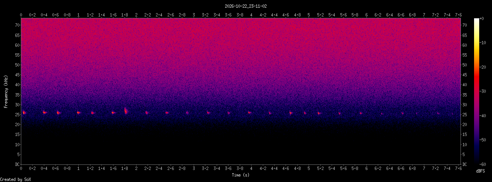
23:10 · big brown bat · 9 calls · 26–30 kHz
detector: Nyctalus leisleri (UK) ≈ big brown or silver-haired bat · confidence 0.62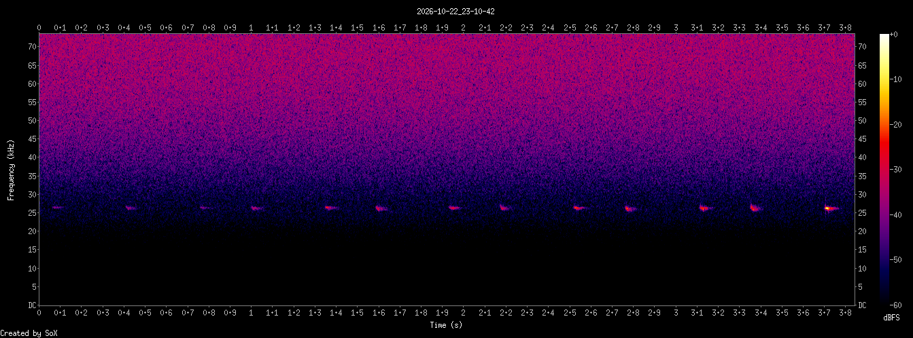
Wednesday, October 21, 2026 (1 pass)
02:50 · big brown bat · 2 calls · 26–30 kHz
detector: Nyctalus leisleri (UK) ≈ big brown or silver-haired bat · confidence 0.64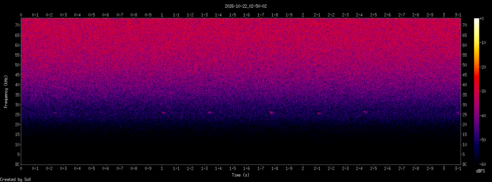
Tuesday, October 20, 2026 (2 passes)
02:11 · big brown bat · 24 calls · 25–30 kHz
detector: Nyctalus leisleri (UK) ≈ big brown or silver-haired bat · confidence 0.70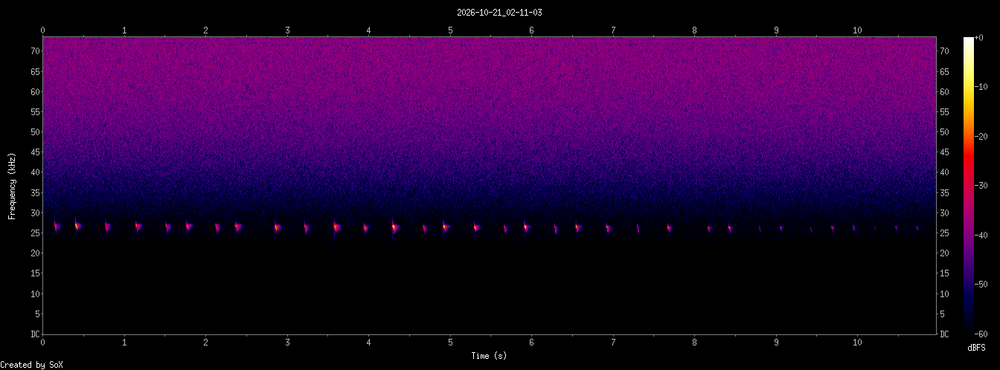
02:10 · big brown bat · 11 calls · 26–30 kHz
detector: Nyctalus leisleri (UK) ≈ big brown or silver-haired bat · confidence 0.69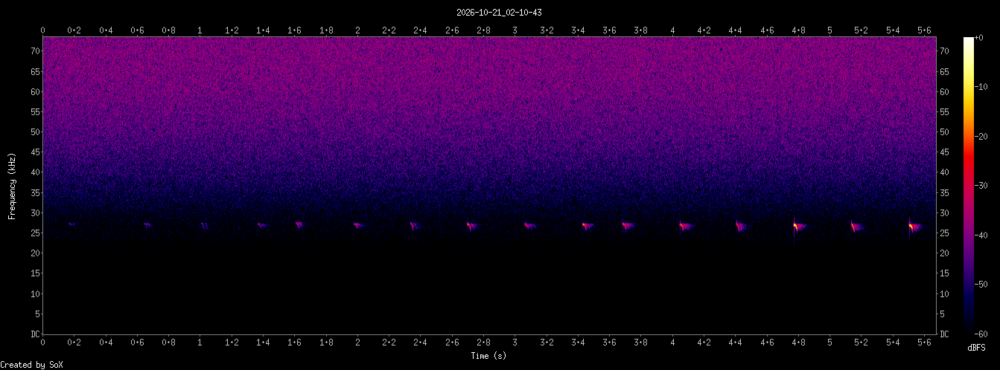
Monday, October 19, 2026 (3 passes)
00:31 · big brown bat · 4 calls · 32–42 kHz
detector: Nyctalus leisleri (UK) ≈ big brown or silver-haired bat · confidence 0.63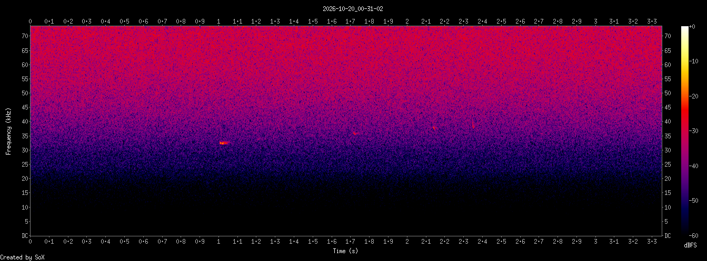
20:41 · hoary bat? · 5 calls · 21–27 kHz
detector: Nyctalus leisleri (UK) ≈ big brown or silver-haired bat · confidence 0.66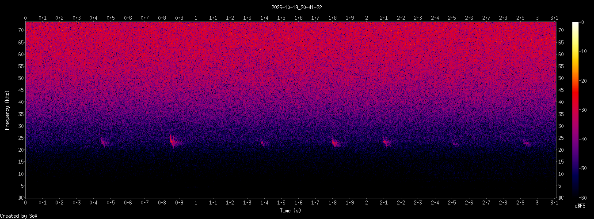
20:41 · hoary bat? · 19 calls · 21–31 kHz
detector: Nyctalus leisleri (UK) ≈ big brown or silver-haired bat · confidence 0.78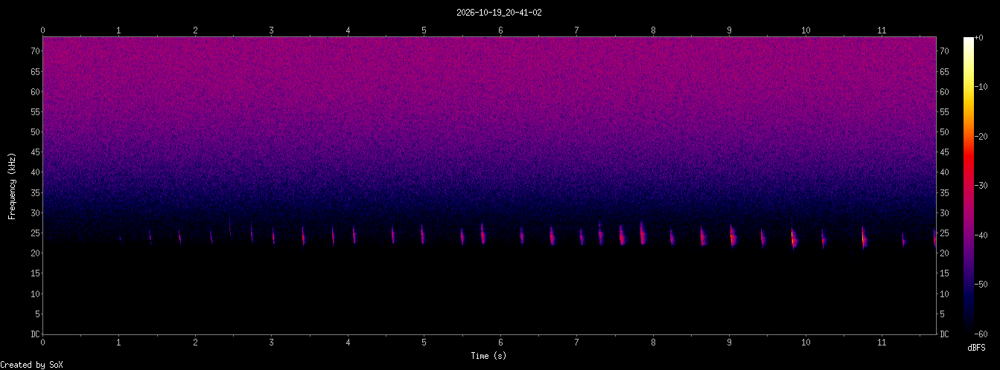
Sunday, October 18, 2026 (2 passes)
22:11 · eastern red bat? · 6 calls · 40–51 kHz
detector: Pipistrellus nathusii (UK) ≈ eastern red bat · confidence 0.62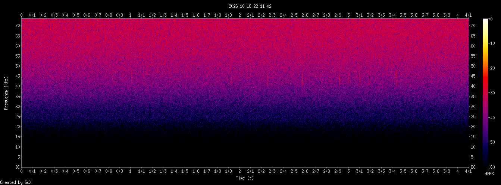
19:51 · eastern red bat? · 2 calls · 34–42 kHz
detector: Eptesicus serotinus (UK) ≈ big brown bat · confidence 0.65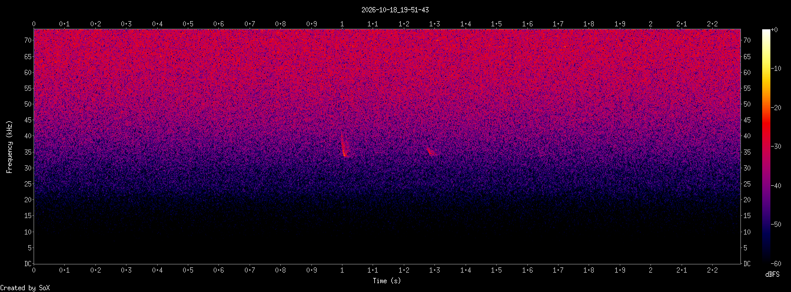
Friday, October 16, 2026 (2 passes)
02:20 · eastern red bat? · 3 calls · 34–42 kHz
detector: Pipistrellus nathusii (UK) ≈ eastern red bat · confidence 0.6422:11 · big brown bat · 5 calls · 26–33 kHz
detector: Nyctalus leisleri (UK) ≈ big brown or silver-haired bat · confidence 0.64
Thursday, October 15, 2026 (11 passes)
23:00 · big brown bat · 17 calls · 24–30 kHz
detector: Nyctalus leisleri (UK) ≈ big brown or silver-haired bat · confidence 0.73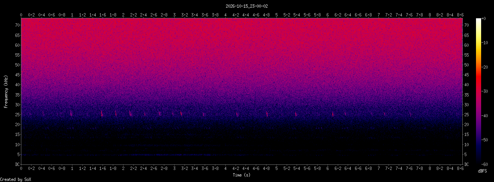
21:01 · big brown bat · 3 calls · 24–29 kHz
detector: Nyctalus leisleri (UK) ≈ big brown or silver-haired bat · confidence 0.5621:00 · big brown bat · 3 calls · 26–30 kHz
detector: Nyctalus leisleri (UK) ≈ big brown or silver-haired bat · confidence 0.5921:00 · big brown bat · 5 calls · 26–30 kHz
detector: Nyctalus leisleri (UK) ≈ big brown or silver-haired bat · confidence 0.72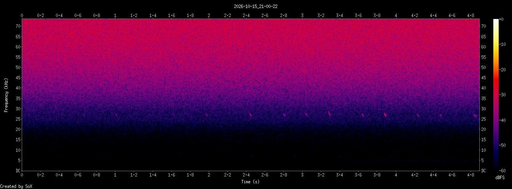
20:01 · hoary bat? · 18 calls · 20–29 kHz
detector: Nyctalus leisleri (UK) ≈ big brown or silver-haired bat · confidence 0.7520:01 · hoary bat? · 9 calls · 20–30 kHz
detector: Nyctalus leisleri (UK) ≈ big brown or silver-haired bat · confidence 0.6919:11 · hoary bat? · 21 calls · 21–30 kHz
detector: Nyctalus leisleri (UK) ≈ big brown or silver-haired bat · confidence 0.6319:11 · hoary bat? · 4 calls · 21–26 kHz
detector: Nyctalus leisleri (UK) ≈ big brown or silver-haired bat · confidence 0.60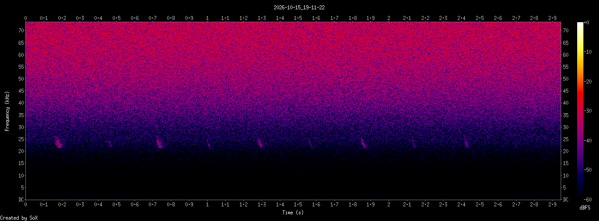
19:11 · hoary bat? · 14 calls · 22–29 kHz
detector: Nyctalus leisleri (UK) ≈ big brown or silver-haired bat · confidence 0.65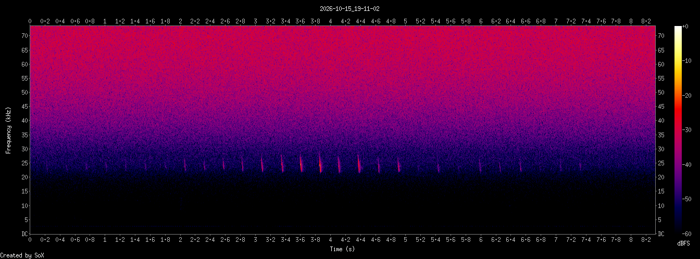
19:10 · hoary bat? · 5 calls · 22–29 kHz
detector: Nyctalus leisleri (UK) ≈ big brown or silver-haired bat · confidence 0.6519:10 · hoary bat? · 4 calls · 22–28 kHz
detector: Nyctalus leisleri (UK) ≈ big brown or silver-haired bat · confidence 0.65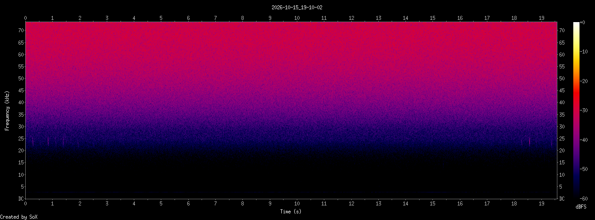
Wednesday, October 14, 2026 (7 passes)
03:50 · eastern red bat? · 3 calls · 38–48 kHz
detector: Pipistrellus nathusii (UK) ≈ eastern red bat · confidence 0.57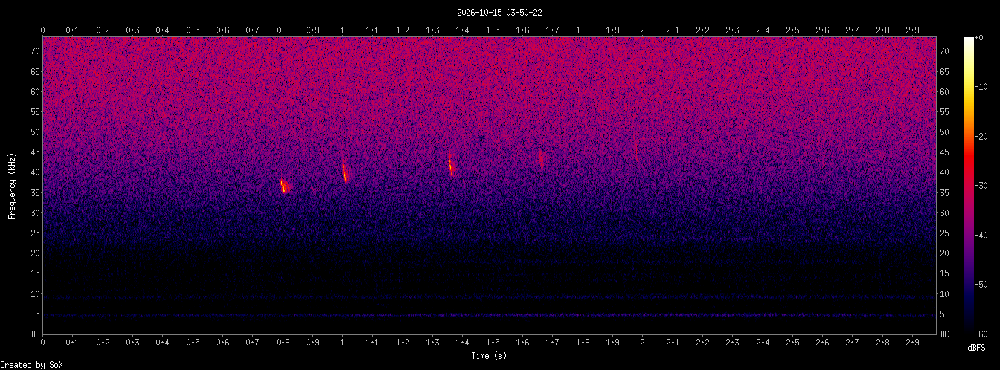
01:50 · big brown bat · 2 calls · 32–50 kHz
detector: Pipistrellus nathusii (UK) ≈ eastern red bat · confidence 0.68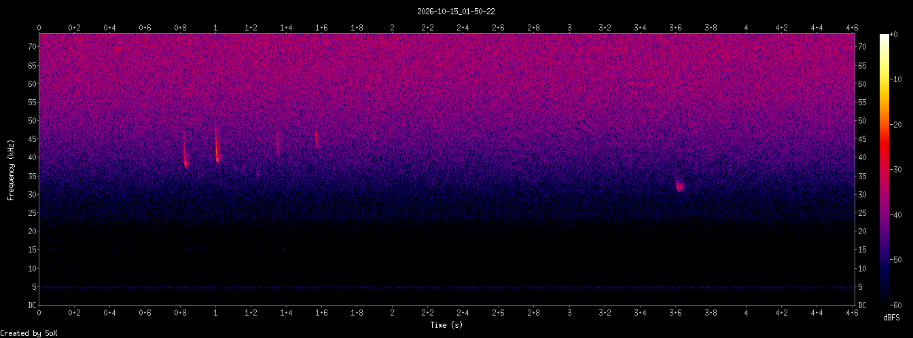
00:31 · hoary bat? · 44 calls · 22–31 kHz
detector: Nyctalus leisleri (UK) ≈ big brown or silver-haired bat · confidence 0.75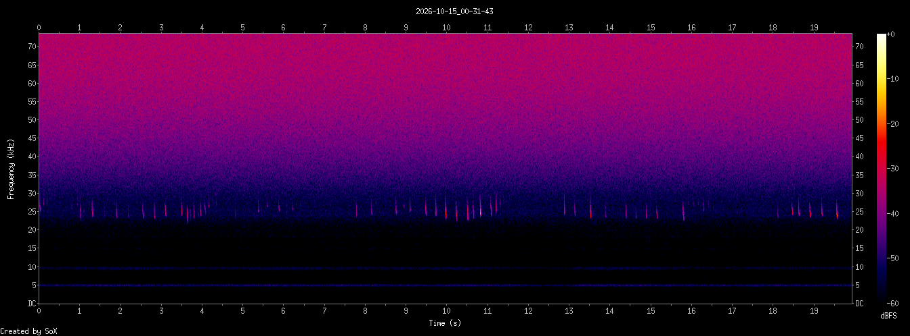
00:31 · hoary bat? · 8 calls · 21–32 kHz
detector: Nyctalus leisleri (UK) ≈ big brown or silver-haired bat · confidence 0.67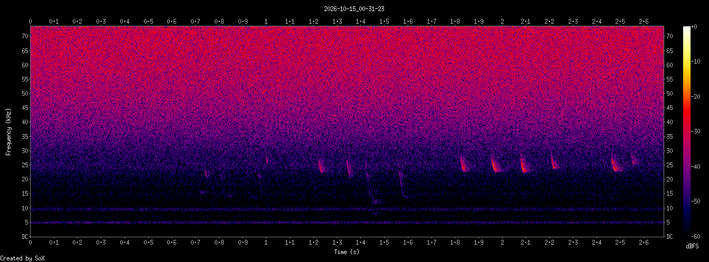
20:21 · big brown bat · 3 calls · 25–32 kHz
detector: Nyctalus leisleri (UK) ≈ big brown or silver-haired bat · confidence 0.6920:11 · big brown bat · 2 calls · 24–29 kHz
detector: Nyctalus leisleri (UK) ≈ big brown or silver-haired bat · confidence 0.6120:10 · eastern red bat? · 4 calls · 35–44 kHz
detector: Pipistrellus nathusii (UK) ≈ eastern red bat · confidence 0.63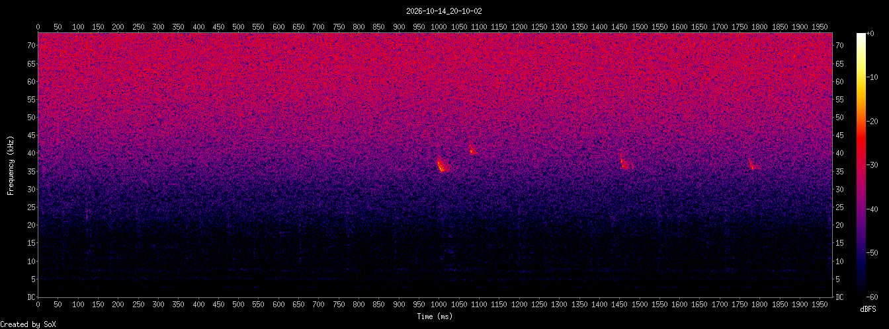
Tuesday, October 13, 2026 (4 passes)
02:40 · hoary bat? · 2 calls · 19–22 kHz
detector: Nyctalus noctula (UK) ≈ hoary bat · confidence 0.5100:31 · hoary bat? · 2 calls · 23–29 kHz
detector: Nyctalus leisleri (UK) ≈ big brown or silver-haired bat · confidence 0.62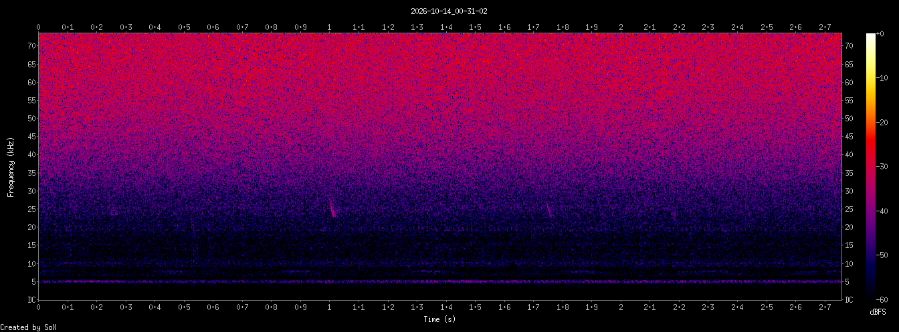
22:30 · hoary bat? · 4 calls · 22–28 kHz
detector: Nyctalus leisleri (UK) ≈ big brown or silver-haired bat · confidence 0.70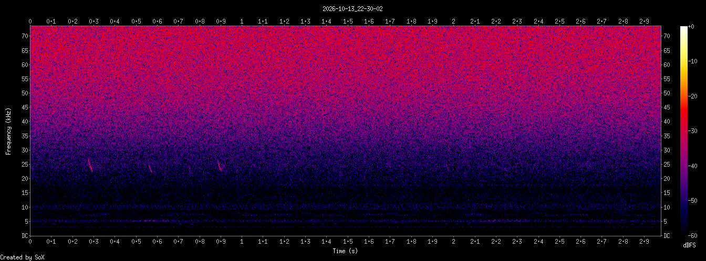
22:20 · big brown bat · 32 calls · 26–35 kHz
detector: Nyctalus leisleri (UK) ≈ big brown or silver-haired bat · confidence 0.71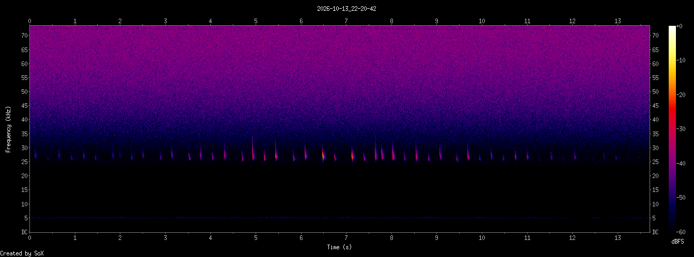
Monday, October 12, 2026 (13 passes)
05:50 · big brown bat · 2 calls · 26–34 kHz
detector: Nyctalus leisleri (UK) ≈ big brown or silver-haired bat · confidence 0.66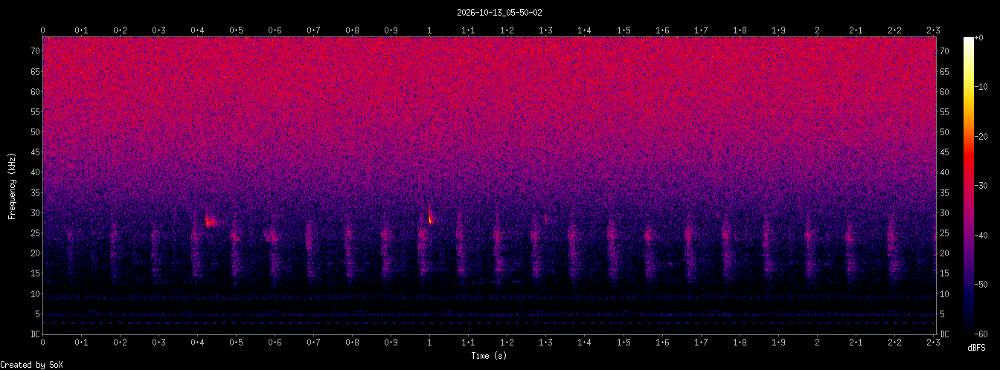
23:20 · hoary bat? · 2 calls · 22–27 kHz
detector: Nyctalus leisleri (UK) ≈ big brown or silver-haired bat · confidence 0.61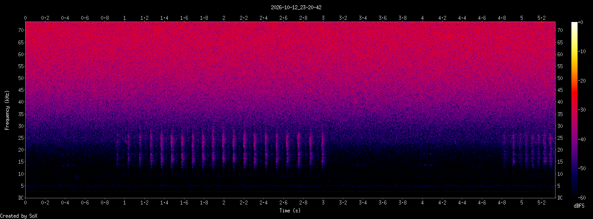
22:31 · big brown bat · 19 calls · 24–33 kHz
detector: Nyctalus leisleri (UK) ≈ big brown or silver-haired bat · confidence 0.70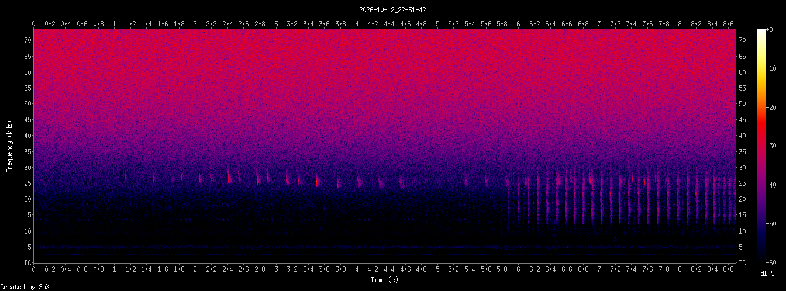
22:31 · big brown bat · 15 calls · 24–33 kHz
detector: Nyctalus leisleri (UK) ≈ big brown or silver-haired bat · confidence 0.73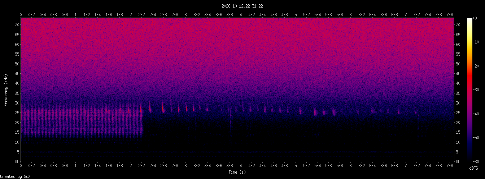
21:30 · eastern red bat? · 6 calls · 41–52 kHz
detector: Pipistrellus pipistrellus (UK) ≈ eastern red or tri-colored bat · confidence 0.64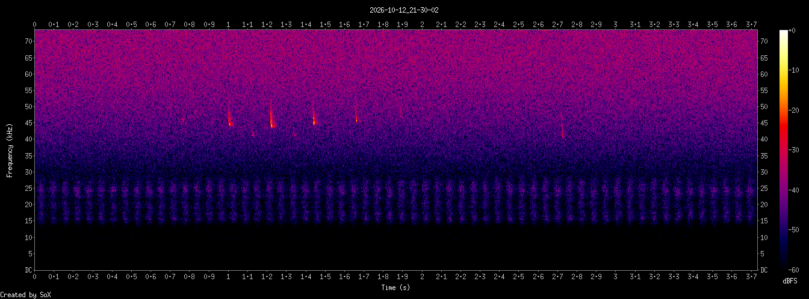
21:01 · eastern red bat? · 5 calls · 32–44 kHz
detector: Pipistrellus nathusii (UK) ≈ eastern red bat · confidence 0.70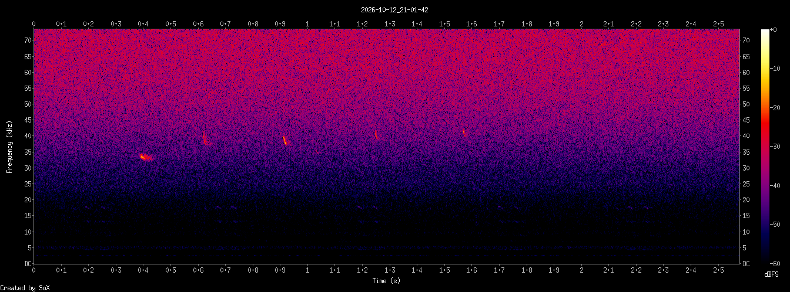
21:00 · big brown bat · 2 calls · 26–29 kHz
detector: Nyctalus leisleri (UK) ≈ big brown or silver-haired bat · confidence 0.66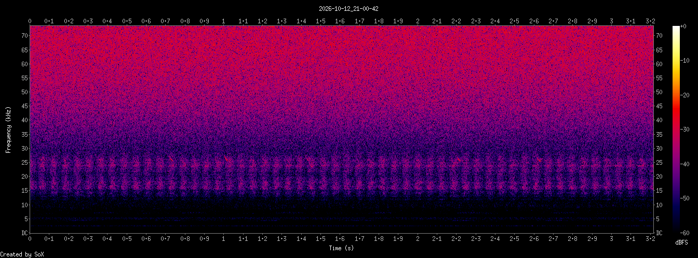
21:00 · big brown bat · 2 calls · 26–30 kHz
detector: Nyctalus leisleri (UK) ≈ big brown or silver-haired bat · confidence 0.55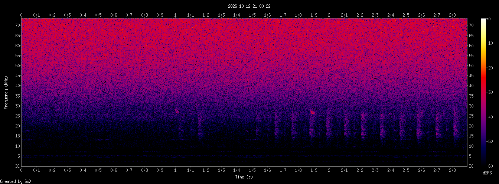
21:00 · hoary bat? · 14 calls · 22–30 kHz
detector: Nyctalus leisleri (UK) ≈ big brown or silver-haired bat · confidence 0.63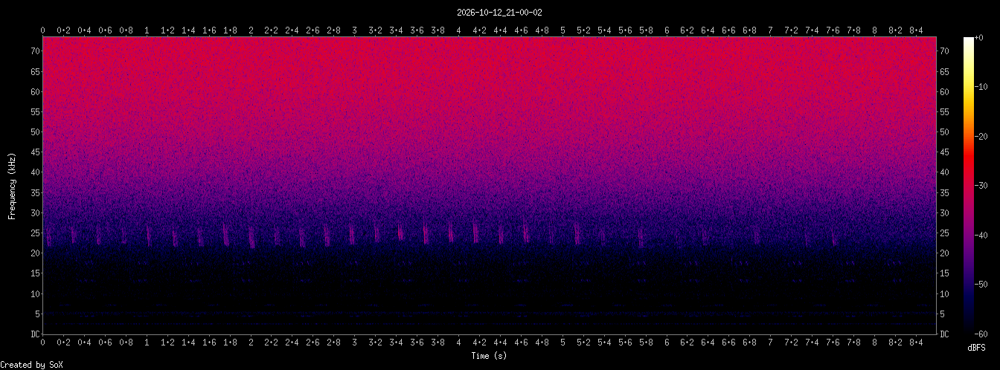
20:41 · big brown bat · 3 calls · 32–38 kHz
detector: Nyctalus leisleri (UK) ≈ big brown or silver-haired bat · confidence 0.60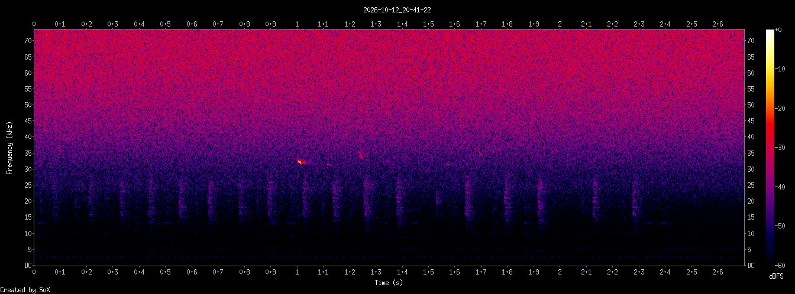
20:20 · hoary bat? · 4 calls · 23–29 kHz
detector: Nyctalus leisleri (UK) ≈ big brown or silver-haired bat · confidence 0.66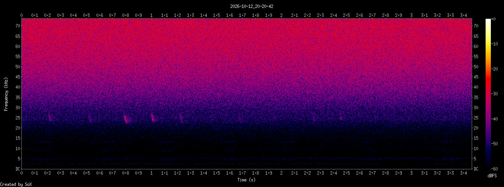
20:20 · hoary bat? · 2 calls · 23–30 kHz
detector: Nyctalus leisleri (UK) ≈ big brown or silver-haired bat · confidence 0.63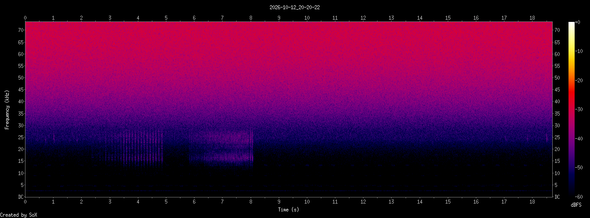
19:50 · hoary bat? · 18 calls · 22–32 kHz
detector: Eptesicus serotinus (UK) ≈ big brown bat · confidence 0.65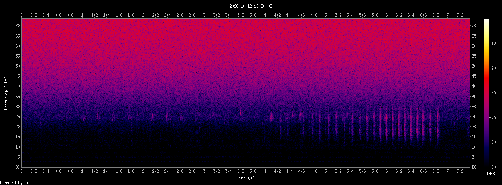
Sunday, October 11, 2026 (2 passes)
01:50 · hoary bat? · 18 calls · 23–28 kHz
detector: Nyctalus leisleri (UK) ≈ big brown or silver-haired bat · confidence 0.77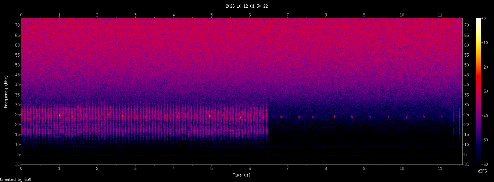
22:41 · a Myotis or tri-colored bat? · 3 calls · 48–55 kHz
detector: Pipistrellus pipistrellus (UK) ≈ eastern red or tri-colored bat · confidence 0.62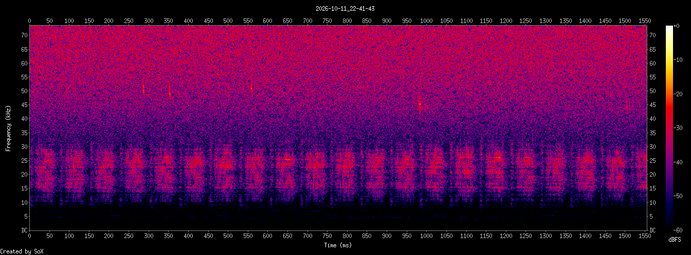
Saturday, October 10, 2026 (1 pass)
23:30 · eastern red bat? · 8 calls · 38–47 kHz
detector: Pipistrellus nathusii (UK) ≈ eastern red bat · confidence 0.72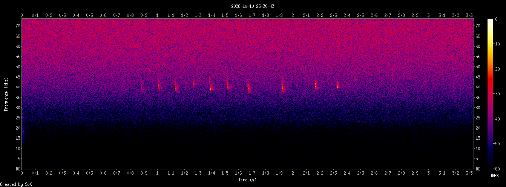
Friday, October 9, 2026 (1 pass)
19:50 · eastern red bat? · 3 calls · 44–50 kHz
detector: Pipistrellus pipistrellus (UK) ≈ eastern red or tri-colored bat · confidence 0.58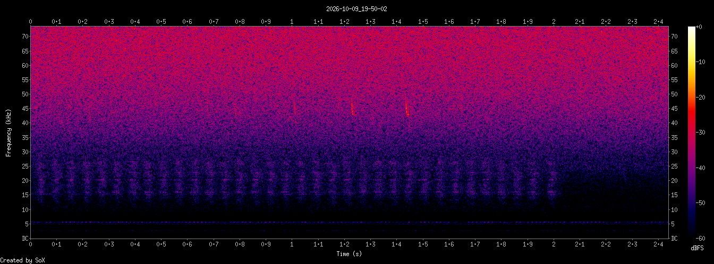
Thursday, October 8, 2026 (1 pass)
21:01 · big brown bat · 17 calls · 26–39 kHz
detector: Nyctalus leisleri (UK) ≈ big brown or silver-haired bat · confidence 0.68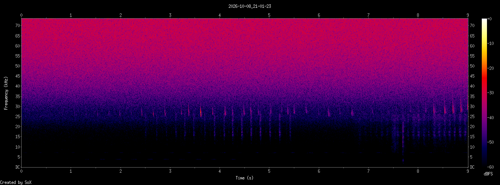
Wednesday, October 7, 2026 (9 passes)
04:21 · big brown bat · 14 calls · 26–31 kHz
detector: Nyctalus leisleri (UK) ≈ big brown or silver-haired bat · confidence 0.6903:30 · big brown bat · 29 calls · 24–29 kHz
detector: Nyctalus leisleri (UK) ≈ big brown or silver-haired bat · confidence 0.79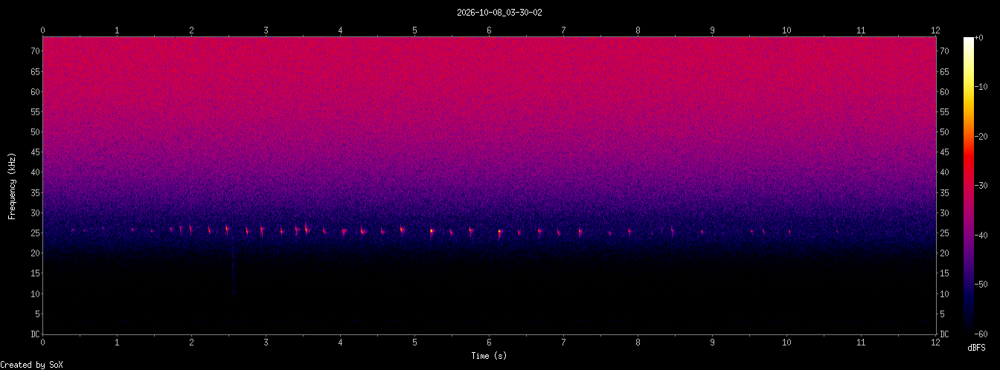
03:20 · big brown bat · 11 calls · 25–30 kHz
detector: Nyctalus leisleri (UK) ≈ big brown or silver-haired bat · confidence 0.75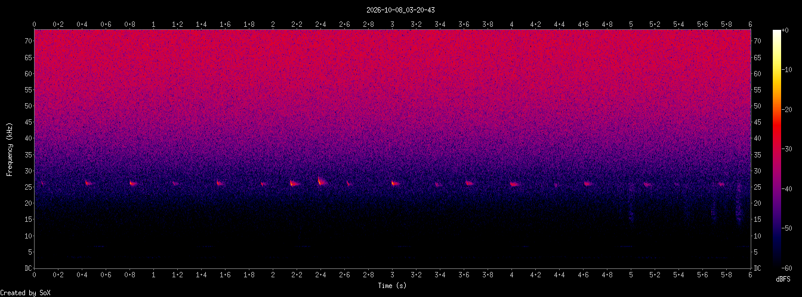
03:20 · big brown bat · 4 calls · 26–30 kHz
detector: Nyctalus leisleri (UK) ≈ big brown or silver-haired bat · confidence 0.69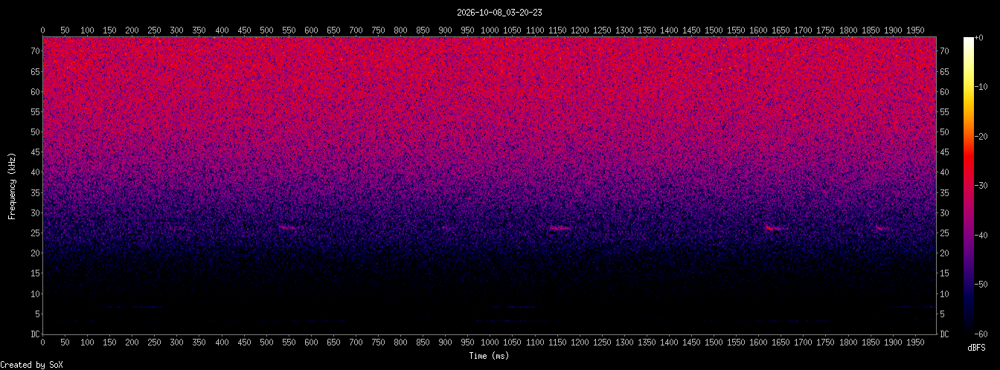
03:00 · big brown bat · 1 call · 24–29 kHz
detector: Nyctalus leisleri (UK) ≈ big brown or silver-haired bat · confidence 0.39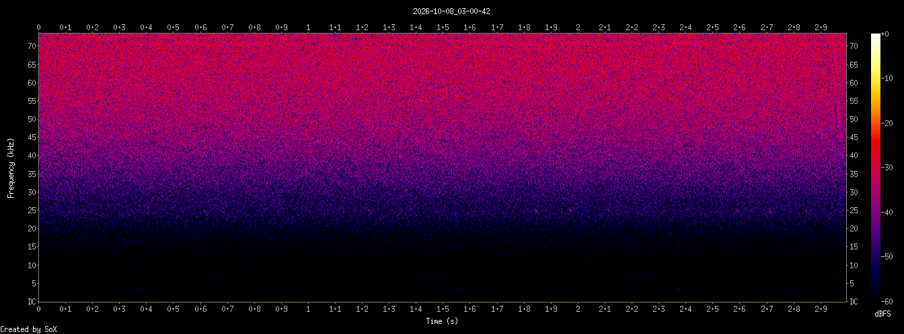
02:50 · big brown bat · 2 calls · 26–29 kHz
detector: Nyctalus leisleri (UK) ≈ big brown or silver-haired bat · confidence 0.56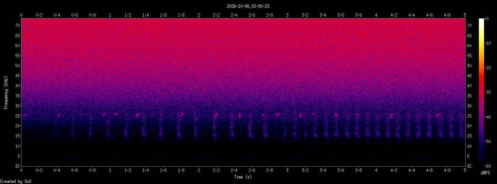
02:20 · big brown bat · 2 calls · 26–30 kHz
detector: Nyctalus leisleri (UK) ≈ big brown or silver-haired bat · confidence 0.43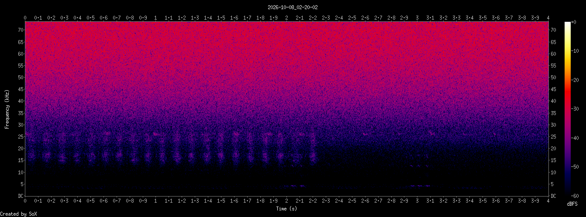
01:40 · big brown bat · 16 calls · 24–30 kHz
detector: Nyctalus leisleri (UK) ≈ big brown or silver-haired bat · confidence 0.77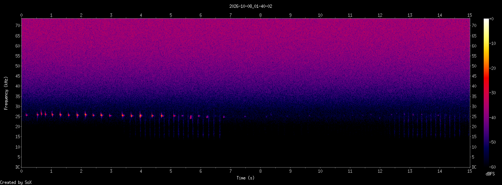
19:40 · big brown bat · 9 calls · 26–34 kHz
detector: Nyctalus leisleri (UK) ≈ big brown or silver-haired bat · confidence 0.70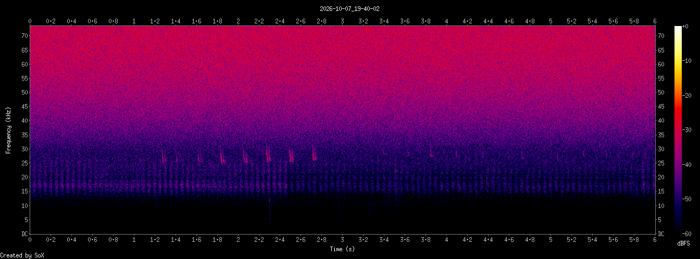
Tuesday, October 6, 2026 (2 passes)
19:40 · big brown bat · 2 calls · 25–29 kHz
detector: Nyctalus leisleri (UK) ≈ big brown or silver-haired bat · confidence 0.61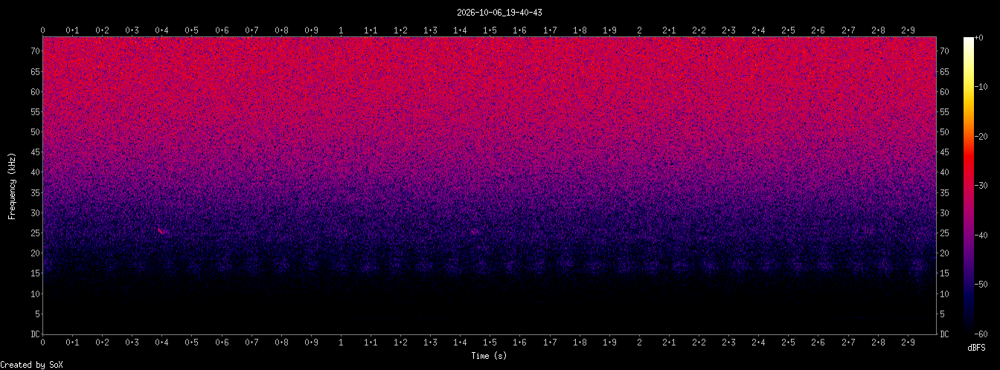
19:40 · big brown bat · 7 calls · 25–29 kHz
detector: Nyctalus leisleri (UK) ≈ big brown or silver-haired bat · confidence 0.70
auto-generated